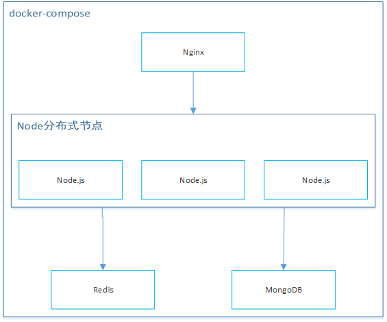

使用Docker-Compose部署Nodejs应用，Nginx反向代理实现负载均衡。
架构

配置文件
version: '3' services: live-nginx: image: nginx restart: on-failure networks: - backend ports: - "7000:7000" volumes: - /opt/live/live-server/nginx.conf:/etc/nginx/nginx.conf depends_on: - live-server live-server: image: "node:8.4.0" restart: on-failure expose: - "7000" volumes: - /opt/live/live-server:/opt/live/server command: ["npm", "run", "docker"] working_dir: "/opt/live/server" networks: backend: aliases: - apps depends_on: - live-redis - live-mongo live-redis: image: "redis" networks: - backend live-mongo: networks: - backend image: "mongo" expose: - "27017" volumes: - mongodata:/data/db volumes: mongodata: networks: backend: driver: overlay
|
运行
docker-compose up -d --scale live-server=2 docker-compose ps docker-compose stop [service] docker-compose down [service]
|
简单说明：
- 所有service必须在同一个networks下，这样可通过service名称互相访问。
- live-server可以部署多个，通过scale参数指定
- 使用depends_on解决依赖
- 数据不要放在docker中，使用volumes挂载宿主机文件夹
- 使用restart指定重启策略，注意不要always，可能导致真的异常